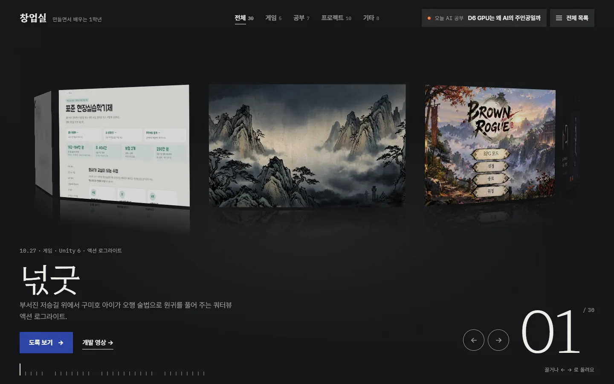
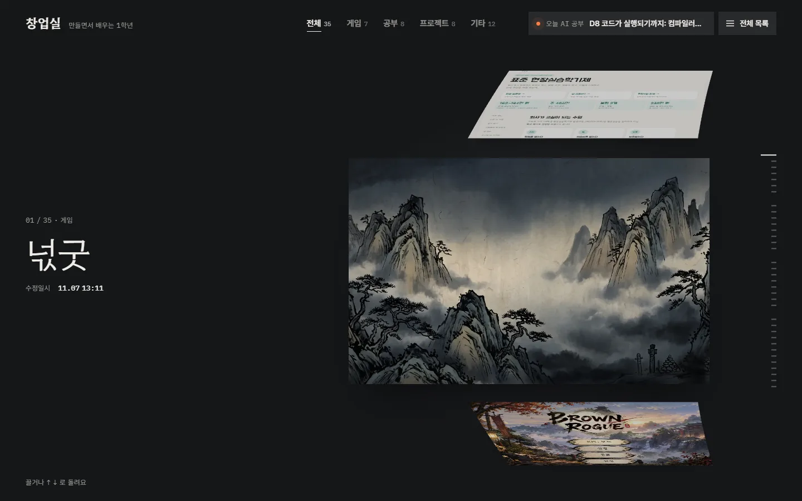
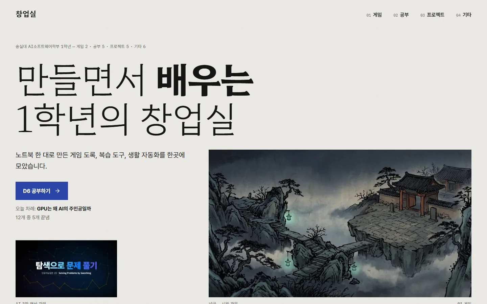
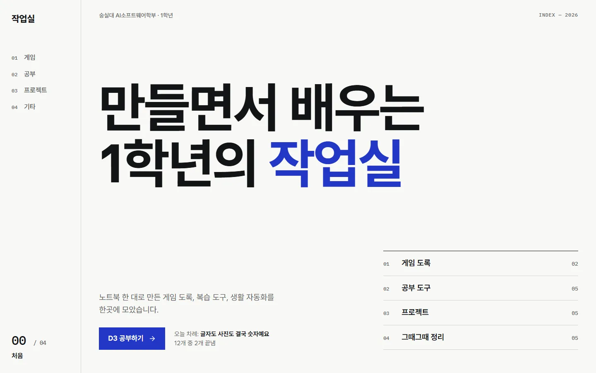
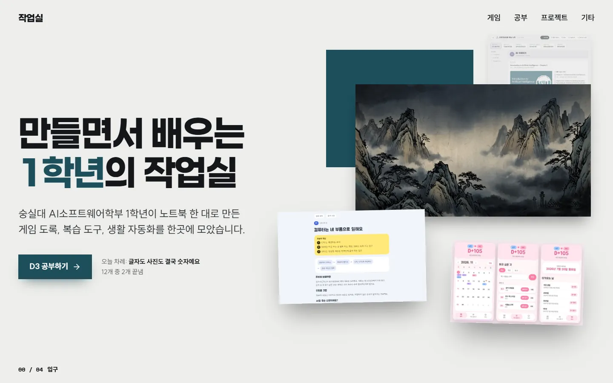
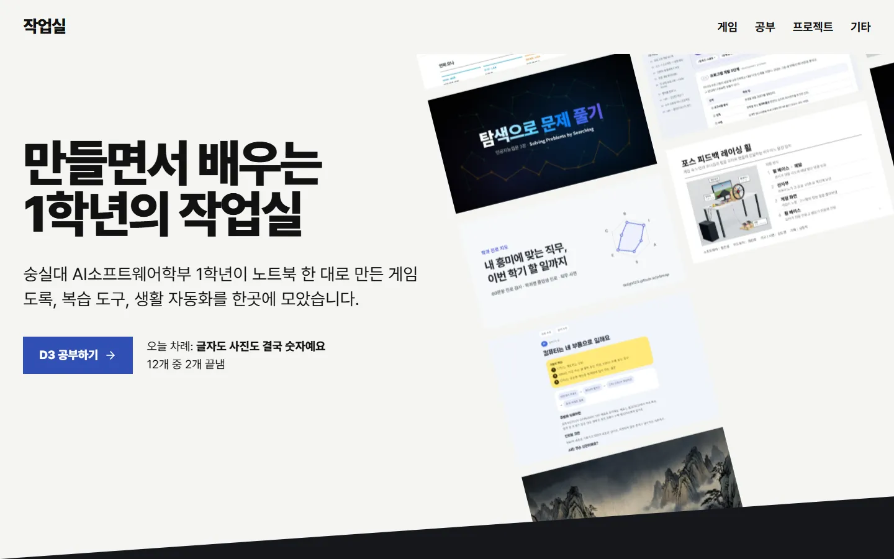

첫 화면 시안
11.07부터 첫 화면은 작품 고리. 11.12에 잠깐 바꿨던 작품 원통과 그 전의 편집 저널은 아래에 그대로 남겨 두었습니다.
-

적용 중작품 고리
작품 30개가 한 고리. 끌거나 화살표로 돌리면 앞에 온 작품의 분류색으로 방이 바뀌고, 전체 목록은 한 번에.
11.07 · Hahmlet · Pretendard · IBM Plex Mono
처음 데모 보기 -

작품 원통
11.12에 잠깐 쓴 첫 화면. 작품 35개가 세로로 도는 원통, 왼쪽엔 제목과 수정일시. 앞 카드를 누르면 왼쪽 위로 올라가고 오른쪽에 설명과 실행 화면.
11.12 · Hahmlet · Pretendard · IBM Plex Mono
시안 보기 -

8.5 / 10A 편집 저널
11.01~11.07 첫 화면. 가는 세리프 제목에 강조어만 굵게, 비대칭 편집 그리드, 큰 번호, 펼쳐지는 그림.
Hahmlet · Pretendard · IBM Plex Mono
11.07까지 쓴 첫 화면 처음 시안 보기 -

8 / 10B 인덱스 아카이브
왼쪽 고정 목차와 진행 표시, 게임 가로 넘김, 흐르는 오늘 공부, 표 행에 따라오는 그림.
Wanted Sans · IBM Plex Mono
시안 보기 -

7.5 / 10C 전시장
겹쳐 쌓인 그림, 스크롤로 화면 가득 커지는 게임, 위로 쌓이는 공부 판, 크기가 다른 작품 벽.
Paperlogy · SUIT · IBM Plex Mono
시안 보기 -
